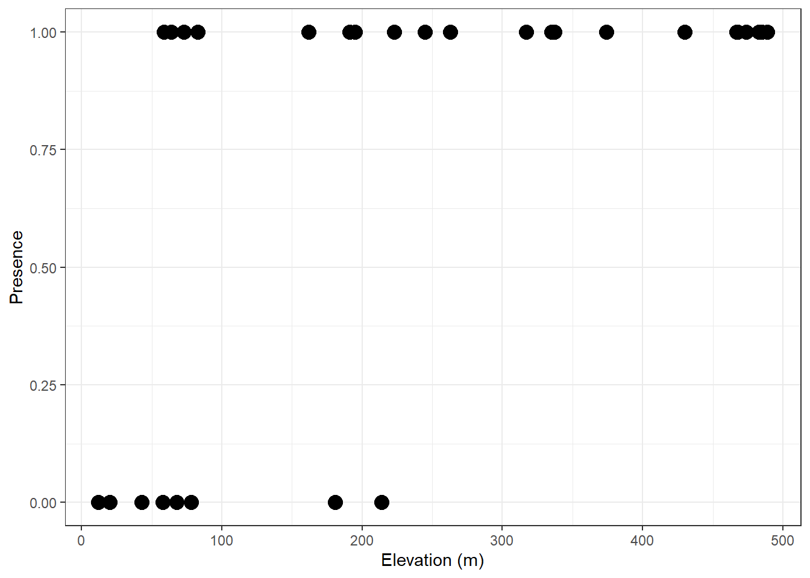
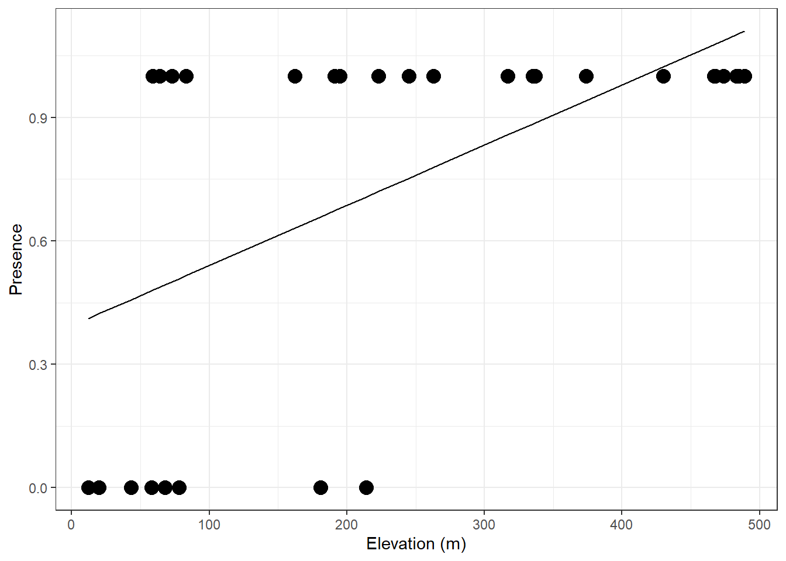
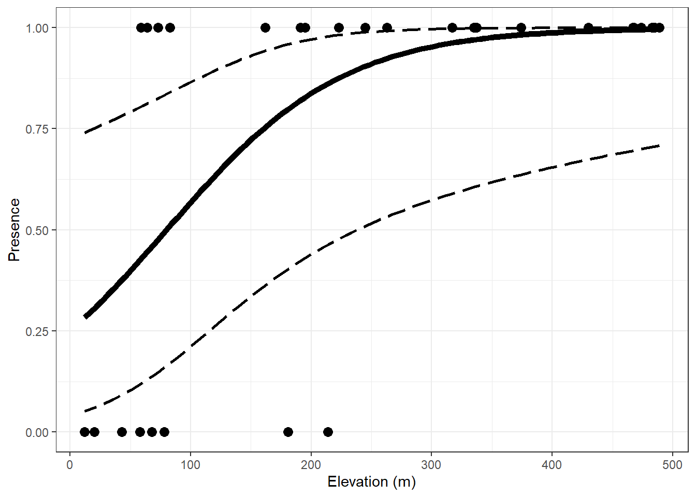
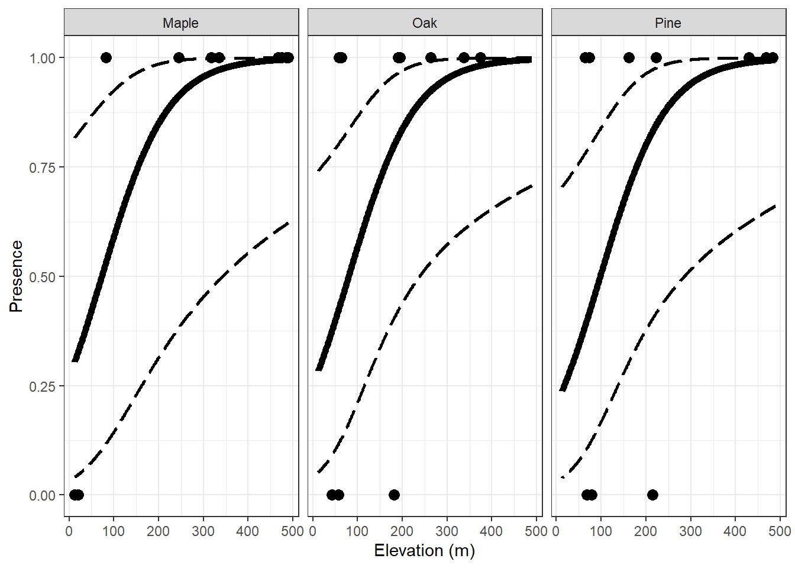
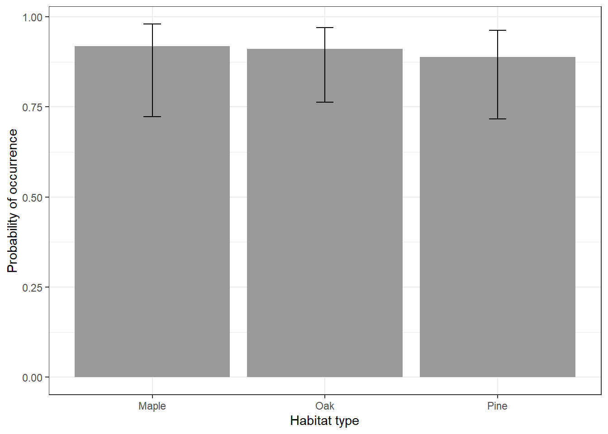

orchiddata <- readRDS("orchid.RDS")March 27 lab
Generalized Linear models
Just as a reminder… We use GLM’s when the predictor and response variables DO NOT have an underlying linear relationship.
In Linear Models we model the response as a function of the predictors.
In GLM, we model a function of the response as a function of the predictors. That function is called the link function.
For binomial data, we use the LOGISTIC REGRESSION: logit(p/(1-p))
Logistic regression
When the response variable is binary, our responses are limited to 0’s and 1’s. Which is which depends on you, but usually 1 is seen as a “success” or “positive”.
Some examples:
- Presence/absence
- Alive/Dead
- Homozygous/Heterozygous
- Mature/non mature
- Male/Female
- Pregnant/no pregnant
- Healthy / diseased
Data
Download the orchid.RDS file and read it into an object called orchiddata.
Let’s explore the data
head(orchiddata) presence abundance elevation habitat
1 0 0 58 Oak
2 1 7 191 Oak
3 0 0 43 Oak
4 1 11 374 Oak
5 1 11 337 Oak
6 1 1 64 OakAnd let’s look at the summary
summary(orchiddata) presence abundance elevation habitat
Min. :0.0000 Min. : 0.00 Min. : 12.00 Length:30
1st Qu.:0.2500 1st Qu.: 0.25 1st Qu.: 69.25 Class :character
Median :1.0000 Median : 4.00 Median :204.50 Mode :character
Mean :0.7333 Mean :13.30 Mean :231.83
3rd Qu.:1.0000 3rd Qu.:20.00 3rd Qu.:364.75
Max. :1.0000 Max. :51.00 Max. :489.00 Let’s make habitat into a “factor”
orchiddata$habitat<-as.factor(orchiddata$habitat)And look into the summary again:
summary(orchiddata) presence abundance elevation habitat
Min. :0.0000 Min. : 0.00 Min. : 12.00 Maple:10
1st Qu.:0.2500 1st Qu.: 0.25 1st Qu.: 69.25 Oak :10
Median :1.0000 Median : 4.00 Median :204.50 Pine :10
Mean :0.7333 Mean :13.30 Mean :231.83
3rd Qu.:1.0000 3rd Qu.:20.00 3rd Qu.:364.75
Max. :1.0000 Max. :51.00 Max. :489.00 Let’s now plot our data:
library(ggplot2)
ggplot() +
geom_point(data = orchiddata, aes(x = elevation, y = presence),size=4) +
scale_y_continuous("Presence") +
scale_x_continuous("Elevation (m)") +
theme_bw()
Now, let’s run a normal linear model, in which we explore the presence of the orchids dependent on the elevation:
mod1 <- lm(presence~elevation, data= orchiddata)
summary(mod1)
Call:
lm(formula = presence ~ elevation, data = orchiddata)
Residuals:
Min 1Q Median 3Q Max
-0.70723 -0.33612 0.01761 0.31033 0.51963
Coefficients:
Estimate Std. Error t value Pr(>|t|)
(Intercept) 0.3940143 0.1215525 3.242 0.00306 **
elevation 0.0014636 0.0004281 3.419 0.00194 **
---
Signif. codes: 0 '***' 0.001 '**' 0.01 '*' 0.05 '.' 0.1 ' ' 1
Residual standard error: 0.3845 on 28 degrees of freedom
Multiple R-squared: 0.2946, Adjusted R-squared: 0.2694
F-statistic: 11.69 on 1 and 28 DF, p-value: 0.001943And let’s add the model predictors to our plot:
model_pred <- predict(mod1)
ggplot() +
geom_point(data = orchiddata, aes(x = elevation, y = presence),size=4) +
geom_line(aes(orchiddata$elevation, model_pred)) +
scale_y_continuous("Presence") +
scale_x_continuous("Elevation (m)") +
theme_bw()
Ok, we talked about this during Monday’s leccture.
Now, let’s use the link function.
Remember:
\[ logit(p_i) = \beta_0 + \beta_1x_{i1} + \beta_2x_{i2} + \cdots \beta_zx_{iz} \]
\[ y_i \sim binomial(N,p_i) \]
And remember
N = number of trials
\(p_i\) = probability of success for sample unit i
z = number of predictors in model
Let’s run a model
model2 <- glm(presence ~ habitat + elevation, family = binomial(link = "logit"), data = orchiddata)
summary(model2)
Call:
glm(formula = presence ~ habitat + elevation, family = binomial(link = "logit"),
data = orchiddata)
Coefficients:
Estimate Std. Error z value Pr(>|z|)
(Intercept) -0.995978 1.216980 -0.818 0.4131
habitatOak -0.096781 1.367518 -0.071 0.9436
habitatPine -0.337224 1.381569 -0.244 0.8072
elevation 0.013658 0.006011 2.272 0.0231 *
---
Signif. codes: 0 '***' 0.001 '**' 0.01 '*' 0.05 '.' 0.1 ' ' 1
(Dispersion parameter for binomial family taken to be 1)
Null deviance: 34.795 on 29 degrees of freedom
Residual deviance: 23.132 on 26 degrees of freedom
AIC: 31.132
Number of Fisher Scoring iterations: 6And now that we really understand (hopefully! Else I’ll be pretty sad!) how we can obtain predictions from linear models, we can do it the same way for GLM’s.
Looking at the model matrix always helps. First let’s look at the data again:
head(orchiddata) presence abundance elevation habitat
1 0 0 58 Oak
2 1 7 191 Oak
3 0 0 43 Oak
4 1 11 374 Oak
5 1 11 337 Oak
6 1 1 64 OakAnd then, let’s look at the model matrix:
head(model.matrix(model2)) (Intercept) habitatOak habitatPine elevation
1 1 1 0 58
2 1 1 0 191
3 1 1 0 43
4 1 1 0 374
5 1 1 0 337
6 1 1 0 64However, these linear predictors are for the transformed response variable (logit of odds). To look at the actual value predictors, we use predict():
Let’s predict the occurrence probability at different elevations in the oak habitat.
- Step 1: Make a data frame with different values of the predictors (x)
predData.elev <- data.frame(elevation = seq(min(orchiddata$elevation), max(orchiddata$elevation), length = 100),habitat = "Oak")
head(predData.elev) elevation habitat
1 12.00000 Oak
2 16.81818 Oak
3 21.63636 Oak
4 26.45455 Oak
5 31.27273 Oak
6 36.09091 Oak- Step 2: Obtain the predictors
pred.link <- predict(model2, newdata = predData.elev, se.fit = TRUE)- Step 3: Use plogis (inverse link) to backtransform data
predData.elev$p <- plogis(pred.link$fit) # back transform to probability scale
predData.elev$lower <- plogis(pred.link$fit - 1.96 * pred.link$se.fit)
predData.elev$upper <- plogis(pred.link$fit + 1.96 * pred.link$se.fit)And now… let’s plot:
ggplot() +
geom_point(data = orchiddata, aes(x = elevation, y = presence),size=3) +
geom_path(data = predData.elev, aes(x = elevation, y = p),size=2) +
geom_ribbon(data = predData.elev, aes(x = elevation, ymin = lower, ymax = upper),
fill = NA, color = "black", linetype = "longdash",size=1) +
scale_y_continuous("Presence") +
scale_x_continuous("Elevation (m)") +
theme_bw()Warning: Using `size` aesthetic for lines was deprecated in ggplot2 3.4.0.
ℹ Please use `linewidth` instead.
Look at the CI’s what do you notice?
Look at all habitats at the same time.
This is an alternative way to look at it, particularly for models that seem pretty close.
Also… the way to do it in the same plot using different colors is in Canvas!
new.data2 <- expand.grid(elevation = seq(min(orchiddata$elevation), max(orchiddata$elevation)),
habitat = c("Maple", "Oak", "Pine"))
pred.link.full <- predict(model2, newdata = new.data2, se.fit = TRUE)
new.data2$p <- plogis(pred.link.full$fit) # back transform to probability scale
new.data2$lower <- plogis(pred.link.full$fit - 1.96 * pred.link.full$se.fit)
new.data2$upper <- plogis(pred.link.full$fit + 1.96 * pred.link.full$se.fit)
ggplot() +
geom_point(data = orchiddata, aes(x = elevation, y = presence),size=3) +
geom_path(data = new.data2, aes(x = elevation, y = p),size=2) +
geom_ribbon(data = new.data2, aes(x = elevation, ymin = lower, ymax = upper),
fill = NA, color = "black", linetype = "longdash",size=1) +
scale_y_continuous("Presence") +
scale_x_continuous("Elevation (m)") +
facet_wrap(~habitat)+
theme_bw()
Finally… let’s look at the occurrence probability in each habitat type:
predData.hab <- data.frame(habitat = c("Oak", "Maple", "Pine"), elevation = 250)
pred.hab <- predict(model2, newdata = predData.hab, se.fit = TRUE)
predData.hab$p <- plogis(pred.hab$fit) # back transform to probability scale
predData.hab$lower <- plogis(pred.hab$fit - pred.hab$se.fit)
predData.hab$upper <- plogis(pred.hab$fit + pred.hab$se.fit)
ggplot() +
geom_col(data = predData.hab, aes(x = habitat, y = p), fill = "grey60") +
geom_errorbar(data = predData.hab, aes(x = habitat, ymin = lower, ymax = upper),
width = 0.1) +
scale_y_continuous("Probability of occurrence") +
scale_x_discrete("Habitat type")+
theme_bw()
Run a third model (glm) where the only explanatory variable is elevation. Compare the AIC values
model3 <- glm(presence ~ elevation, family = binomial(link = "logit"), data = orchiddata)
summary(model3)
Call:
glm(formula = presence ~ elevation, family = binomial(link = "logit"),
data = orchiddata)
Coefficients:
Estimate Std. Error z value Pr(>|z|)
(Intercept) -1.151232 0.827216 -1.392 0.1640
elevation 0.013553 0.005875 2.307 0.0211 *
---
Signif. codes: 0 '***' 0.001 '**' 0.01 '*' 0.05 '.' 0.1 ' ' 1
(Dispersion parameter for binomial family taken to be 1)
Null deviance: 34.795 on 29 degrees of freedom
Residual deviance: 23.205 on 28 degrees of freedom
AIC: 27.205
Number of Fisher Scoring iterations: 6AIC(model2, model3) df AIC
model2 4 31.13178
model3 2 27.20458Model 3 has a lower AIC.